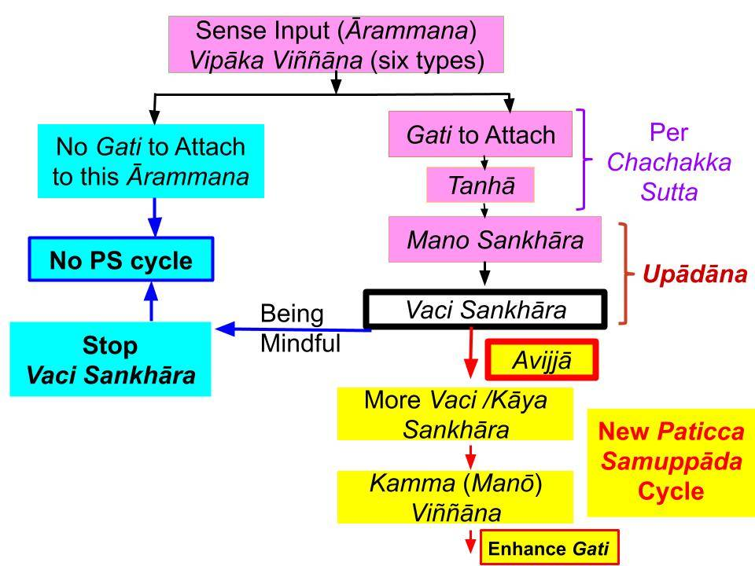
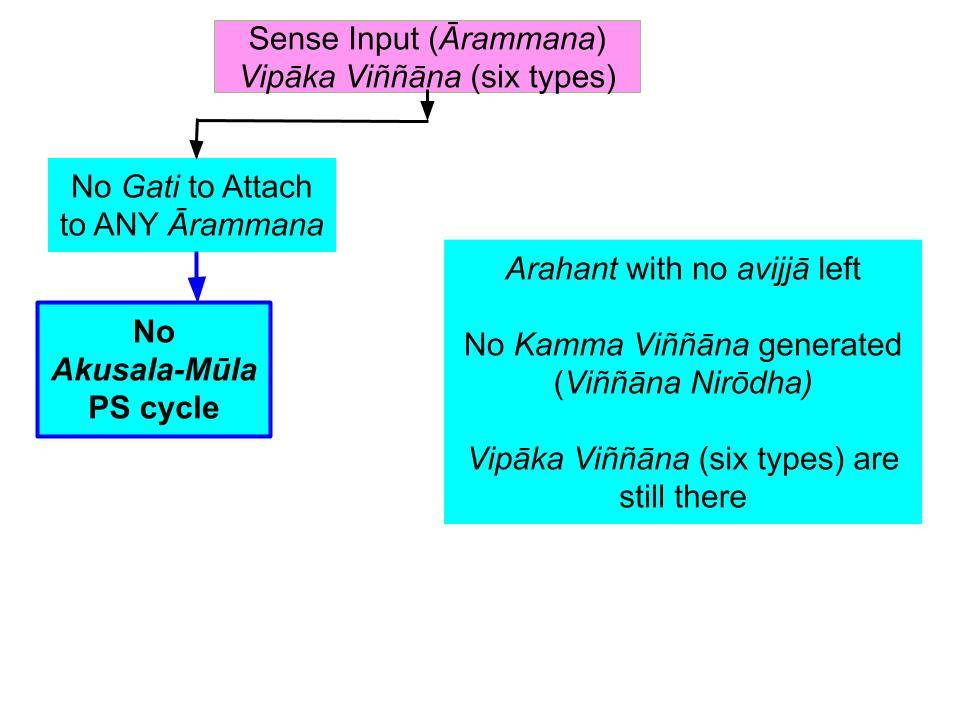

December 14, 2019; revised November 26, 2022
Summary of Discussion Up To Now
1. In the subsection "Worldview of the Buddha," we discuss how the Buddha explained the sensory experience. More importantly, the Buddha taught how a "living being" generates kammic energies for future existences (bhava) based on "attachment" (taṇhā) to a given sensory experience. As we have discussed, "attachment" can happen due to greed, hate, or an unwise mindset.
- First, we discussed how a sensory event starts when a ārammana (sight, sound, smell, taste, touch, dhammā) comes to the mind when one of the six senses (internal āyatana) comes into contact with an external āyatana. Becoming aware of sensory input is one of the six types of vipāka viññāṇa: “cakkhu viññāṇa, sōta viññāṇa, ghāna viññāṇa, jivhā viññāṇa, kāya viññāṇa, manō viññāṇa.”
- Those six types of viññāṇa are vipāka viññāṇa. They DO NOT generate kammic energy. They are "experiences."
- As we will see, kamma viññāṇa can only be manō viññāṇa. Thus, some manō viññāṇa are vipāka viññāṇa and others are kamma viññāṇa.
2. Then, one MAY "attach to" or "get stuck in" that sensory experience INSTANTLY. That means generating taṇhā. Then the "taṇhā paccayā upādāna" step automatically follows. That is a step in the middle of the Paṭicca Samuppāda (PS) cycle.
- One will attach (taṇhā) only if one has "defiled gati." That means one likes or dislikes that sensory experience (which could be connected with ignorance too.) If one attaches, then one will start thinking and speaking (with vaci saṅkhāra) and even may take actions (with kāya saṅkhāra) with a DEFILED MIND. That means those saṅkhāra arise via "avijjā paccayā saṅkhāra." That is part of "upādāna" or "pulling that ārammana close."
- Therefore, what we summarized here in #2 is how the "taṇhā paccayā upādāna" step in PS initiates a new PS process that starts at "avijjā paccayā saṅkhāra." That is how the PS cycle begins in real life, beginning with a ārammana (as detailed in the Chachakka Sutta (MN 148).
Summary in Charts
3. Since it is CRITICAL to understand what we discussed above, I have made the charts below to help us with the discussion.


One can download the charts for easy reading/printing: "Response to a ārammana with Mōha," "Response to a ārammana with Avijjā," and "Response to a ārammana by an Arahant."
- Paṭicca Samuppāda referred to in ALL the above charts is the "Akusala-Mūla Paṭicca Samuppāda." That PS process leads to future suffering.
- Therefore, saṅkhārās that do not arise in an Arahant are ONLY "bad or immoral saṅkhārā," i.e., abisaṅkhārā. An Arahant will still generate manō, vaci, and kāya saṅkhāra to think, speak, and take action. He/she will be engaged in "puñña kriyā" or "moral deeds." Such "moral deeds" are NOT "puñña abhisaṅkhāra" because one does them with complete comprehension of the anicca nature. We will discuss this critical point later.
Difference Between Mōha and Avijjā
4. Let us start with the chart on the left. That chart is for an extreme case of a "totally morally-blind" person. That mind is covered with defilements (mōha.) Just like an animal, such a person would go along with any temptation that comes to mind. His/her "bad gati" will only get stronger.
- The chart in the middle applies to a wide range of humans with avijjā. Avijjā is a lower form of mōha. When one removes the ten types of micchā diṭṭhi, mōha reduces to the avijjā level. Any human who knows right from wrong is an average human. It also includes those who are Ariyā (Sōtapanna Anugāmi and above) but have not yet attained Arahanthood.
- Of course, any Ariya (Noble Person) is INCAPABLE of doing apāyagāmi deeds. An Anāgāmi is INCAPABLE of craving for sensual pleasures, etc. Therefore, as one moves to the higher stages of Nibbāna, one will "attach to" less and less ārammana (sensory inputs.)
- But any average human -- no matter how "moral" by conventional standards -- is CAPABLE of doing even an apāyagāmi deed. The ārammana must be strong enough to be tempted.
- An Arahant has a totally-purified mind and has no "bad gati" left. Therefore, he/she WILL NOT initiate an "Akusala-Mūla Paṭicca Samuppāda" cycle under ANY circumstance. That is indicated in the third chart.
Difference Between Vipāka Viññāṇa and Kamma Viññāṇa
5. Above charts also help us clarify the difference between vipāka viññāṇa and kamma viññāṇa. Any sensory EXPERIENCE is a vipāka viññāṇa. Vipāka viññāṇa can come in through any of the six sense faculties, as shown at the top of the charts. Every living being, including an Arahant, experiences vipāka viññāṇa. In other words, ANY sentient being can see, hear, etc.
- If one attaches (taṇhā) to a ārammana, then that initiates the step "taṇhā paccayā upādāna" step in PS. That means one starts "pulling that ārammana close (upādāna)." First, one starts thinking about it with vaci saṅkhāra. One does that with the sense of a "me" involved in the sensory experience. As we have discussed, there is no need for a "me" or a "self" to experience a sensory input. See "Chachakka Sutta – No “Self” in Initial Sensory Experience."
- Therefore, at the beginning of that "taṇhā paccayā upādāna" step, one starts generating saṅkhāra about that ārammana with the "avijjā paccayā saṅkhāra" step in PS. That is when a PS cycle begins at the "beginning" and then runs through the end.
- The next step in PS after the "avijjā paccayā saṅkhāra" step is "saṅkhāra paccayā viññāṇa." That viññāṇa is a kamma viññāṇa. Since it arises ONLY in mind, that is a manō viññāṇa. This kamma viññāṇa appears at the bottom of the FIRST TWO charts. An Arahant does not generate kamma viññāṇa. Therefore, kamma viññāṇa is absent in the third chart.
Kamma Viññāṇa Generated with the View and saññā (Perception) of "Me" or a "Self"
6. From the last bullet of #5, it is clear that one's mind will NOT go through the Akusala-Mūla PS at ANY TIME, only if one is an Arahant.
- That is because it is ONLY an Arahant who would have "seen" the futility of attaching to ANY sensory input (ārammana.) There is no sense of a "me" or a "self" in an Arahant.
- That is a point that we will discuss in detail in upcoming posts. But it is good to know about that point ahead of time. It is CRITICAL to understand the material presented so far to "keep up" with the upcoming posts when we discuss sakkāya diṭṭhi.
- As we can see, ANYONE below the Arahant stage WILL attach to at least a few sensory inputs. That is because anyone below the Arahant will have at least a trace of avijjā anusaya left.
- It is impossible for an average human even to comprehend that. That is why the Buddha emphasized that it is incorrect to say that a "self" does not exist. The point is that for ANYONE below the Arahant stage of Nibbāna, a "self" with "gati" exists!
- However, anyone above the Sōtapanna Anugāmi can "see" that it is unfruitful to take anything in this world to be "mine," and it can lead to future suffering. That "seeing" is "with wisdom" and is lōkuttara (or lōkuttara) Sammā Diṭṭhi. A fish biting the tasty bait on a hook does not "see" that it will suffer so much. Like that, an average human cannot "see" the suffering hidden in sensual pleasures. We will discuss details in future posts.
- One becomes a Sōtapanna Anugāmi when one comprehends Tilakkhana (anicca, dukkha, anatta) at least to some extent. Even after that, the saññā (perception) of a "me" will be there. That perception will reduce with higher stages of magga phala and disappear at the Arahant stage.
Starting with a "Self" or "No-Self" is not the correct approach
7. As we summarized in #5 above (and discussed in the post mentioned there), attachment to a ārammana happens instantly. That requires no conscious thinking and thus is NOT possible to stop. As long as one has "bad gati," one MAY attach to some sensory inputs (ārammana.)
- The way to eliminate taṇhā is to reduce and finally remove one's "bad gati." Luckily, humans have the ABILITY to do that by understanding the PS process.
- Indeed, there is a "self" is in the PS process. However, that is not an unchanging "self" like a "soul" or a "ātma." I call it a "dynamic self," see "What Reincarnates? – Concept of a Lifestream." That "self" disappears when one attains the Arahant stage!
8. Therefore, until one becomes an Arahant, a sense of "self" will decide how to respond to sensory input based on some attachment to "this world." As shown in the middle chart above, anyone can stop any "bad vaci saṅkhāra" that arises when tempted by a given sensory input. If that fails, one can stop kāya saṅkhāra, which leads to physical actions. Simply put, one should stop immoral conscious thoughts, speech, or deeds as soon as one becomes aware of them.
- When one becomes a Sōtapanna Anugāmi by comprehending Tilakkhana to some extent, one's "apāyagāmi gati" will disappear.
- Until then, one can practice Ānāpānasati or Satipaṭṭhāna Bhāvanā to stop some temptations. One does not need to have formal meditation sessions. It is utterly useless to have formal meditation sessions and not to act with mindfulness when one goes through daily activities. That is when one generates most of the defiled thoughts and actions.
- Formal meditations become more relevant after getting to the Sōtapanna stage. That is why "bhāvanāya pahātabbā" comes last in the Sabbāsava Sutta (MN 2). There, "dassanena pahātabbā" of "removal via correct vision" is first on that list. That is the "correct vision" required to be a Sōtapanna. One must first understand what to meditate on!
Kamma Viññāṇa Have Future Expectations
9. What is the real difference between a vipāka viññāṇa and a kamma viññāṇa?
- Vipāka viññāṇa provides the sensory experience. One sees with cakkhu viññāṇa, hears with sōta viññāṇa, tastes with jivha viññāṇa, smells with ghana viññāṇa, feels touch with kāya viññāṇa, and thoughts coming to the mind with manō viññāṇa.
- Kamma viññāṇa arise via "avijjā paccayā saṅkhāra." For example, when one gets attached to a ārammana via greed or hate, one has an EXPECTATION. If one likes the ārammana, one wants more of it. If one dislikes it, one wants it to go away. Either way, there is an expectation.
- Thus when one consciously thinks (vaci saṅkhāra) and takes actions (kāya saṅkhāra), there are "expectations" embedded in such saṅkhāra. Those saṅkhārā lead to kamma viññāṇa via "saṅkhāra paccayā viññāṇa."
10. Those "expectations" in kamma viññāṇa are energies generated by the mind in javana citta. They stay "out there in the world" as dhammā. Those are part of the dhammā in "manañca paṭicca dhammē ca uppajjāti manō viññāṇaṃ."
- Therefore, just like the other five types of rūpa are "out there in the world," dhammā are "out there," too. They can be detected by the mana indriya, just like a sound detected by the sōta indriya. That is how our future expectations periodically come back to our minds, i.e., how we remember our plans for the future. Sigmund Freud called that the "subconscious." Of course, he had no idea about the actual mechanism.
- Dhammās are rūpa too. But they are just energies that are below suddhāṭṭhaka. They are "anidassanaṃ appaṭighaṃ dhammāyatanapariyāpannaṃ." They "cannot be seen or touched." See, "What are Rūpa? – Dhammā are Rūpa too!"
- The other five types of rūpa sensed via the five physical sense faculties are above the suddhāṭṭhaka level. Modern science is only aware of those five types.
- We will discuss dhammā in detail in the next post.
All posts on the new series at "Origin of Life."
14 de dezembro de 2019; revisado em 26 de novembro de 2022
Resumo da discussão até o momento
1. Na subseção “Visão de mundo do Buddha”, discutimos como o Buddha explicou a experiência sensorial. Mais importante ainda, o Buddha ensinou como um “ser vivo” gera energias kármicas para existências futuras (bhava) com base no “apego” (taṇhā) a uma determinada experiência sensorial. Conforme já discutimos, o “apego” pode ocorrer devido à ganância, ao ódio ou a uma mentalidade imprudente.
- Primeiramente, discutimos como um evento sensorial se inicia quando um ārammana (visão, som, olfato, paladar, tato, dhammā) surge na mente, quando um dos seis sentidos (āyatana interno) entra em contato com um āyatana externo. Tomar consciência do estímulo sensorial é um dos seis tipos de vipāka viññāṇa: “cakkhu viññāṇa, sōta viññāṇa, ghāna viññāṇa, jivhā viññāṇa, kāya viññāṇa, manō viññāṇa.”
- Esses seis tipos de viññāṇa são vipāka viññāṇa. Eles NÃO geram energia kármica. São “experiências”.
- Como veremos, o kamma viññāṇa só pode ser manō viññāṇa. Assim, alguns manō viññāṇa são vipāka viññāṇa e outros são kamma viññāṇa.
2. Então, a pessoa PODE “apegar-se” ou “ficar presa” a essa experiência sensorial INSTANTANEAMENTE. Isso significa gerar taṇhā. Em seguida, a etapa “taṇhā paccayā upādāna” ocorre automaticamente. Essa é uma etapa no meio do ciclo do Paṭicca Samuppāda (PS).
- A pessoa se apegará (taṇhā) somente se tiver um “gati contaminado”. Isso significa que a pessoa gosta ou não gosta dessa experiência sensorial (o que também pode estar relacionado à ignorância). Se a pessoa se apegar, então começará a pensar e a falar (com vaci saṅkhāra) e poderá até mesmo agir (com kāya saṅkhāra) com uma MENTE CONTAMINADA. Isso significa que esses saṅkhāra surgem por meio de “avijjā paccayā saṅkhāra”. Isso faz parte do “upādāna” ou de “atrair esse ārammana para perto”.
- Portanto, o que resumimos aqui no nº 2 é como a etapa “taṇhā paccayā upādāna” no PS inicia um novo processo de PS que começa em “avijjā paccayā saṅkhāra”. É assim que o ciclo do PS começa na vida real, partindo de um ārammana (conforme detalhado no Chachakka Sutta (MN 148)).
Resumo em tabelas
3. Como é FUNDAMENTAL compreender o que discutimos acima, elaborei os gráficos abaixo para nos ajudar na discussão.
É possível baixar os gráficos para facilitar a leitura/impressão: “Resposta a um ārammana com Mōha”, “Resposta a um ārammana com Avijjā” e “Resposta a um ārammana por um Arahant”.
- O Paṭicca Samuppāda mencionado em TODOS os gráficos acima é o “Akusala-Mūla Paṭicca Samuppāda”. Esse processo de PS leva ao sofrimento futuro.
- Portanto, os saṅkhārās que não surgem em um Arahant são APENAS “saṅkhārās ruins ou imorais”, ou seja, abisaṅkhārās. Um Arahant ainda gerará saṅkhāras manō, vaci e kāya para pensar, falar e agir. Ele ou ela estará envolvido em “puñña kriyā” ou “ações morais”. Tais “ações morais” NÃO são “puñña abhisaṅkhāra”, pois são realizadas com plena compreensão da natureza anicca. Discutiremos esse ponto crítico mais adiante.
Diferença entre mōha e avijjā
4. Comecemos pelo gráfico à esquerda. Esse gráfico se refere a um caso extremo de uma pessoa “totalmente cega moralmente”. Essa mente está coberta de impurezas (mōha). Assim como um animal, tal pessoa cederia a qualquer tentação que lhe viesse à mente. Seu “gati ruim” só ficará mais forte.
- O gráfico do meio se aplica a uma ampla gama de seres humanos com avijjā. Avijjā é uma forma inferior de mōha. Quando alguém remove os dez tipos de micchā diṭṭhi, o mōha se reduz ao nível de avijjā. Qualquer ser humano que distingue o certo do errado é um ser humano comum. Isso também inclui aqueles que são Ariyā (Sōtapanna, Anugāmi e acima), mas que ainda não alcançaram o estado de Arahant.
- É claro que qualquer Ariya (Pessoa Nobre) é INCAPAZ de praticar atos apāyagāmi. Um Anāgāmi é INCAPAZ de desejar prazeres sensuais, etc. Portanto, à medida que se avança para os estágios mais elevados do Nibbāna, a pessoa se “apega” cada vez menos aos ārammana (estímulos sensoriais).
- Mas qualquer ser humano comum — por mais “moral” que seja segundo os padrões convencionais — é CAPAZ de praticar até mesmo um ato apāyagāmi. O ārammana deve ser forte o suficiente para que haja tentação.
- Um Arahant possui uma mente totalmente purificada e não tem mais nenhum “gati ruim”. Portanto, ele/ela NÃO INICIARÁ um ciclo de “Akusala-Mūla Paṭicca Samuppāda” sob NENHUMA circunstância. Isso está indicado no terceiro gráfico.
Diferença entre Vipāka Viññāṇa e Kamma Viññāṇa
5. Os gráficos acima também nos ajudam a esclarecer a diferença entre vipāka viññāṇa e kamma viññāṇa. Qualquer EXPERIÊNCIA sensorial é um vipāka viññāṇa. O vipāka viññāṇa pode surgir por meio de qualquer um dos seis sentidos, conforme mostrado na parte superior dos gráficos. Todo ser vivo, incluindo um Arahant, experimenta o vipāka viññāṇa. Em outras palavras, QUALQUER ser senciente pode ver, ouvir etc.
- Se alguém se apega (taṇhā) a um ārammana, isso dá início à etapa “taṇhā paccayā upādāna” na PS. Isso significa que a pessoa começa a “atrair esse ārammana para si (upādāna)”. Primeiro, a pessoa começa a pensar nisso com vaci saṅkhāra. Ela faz isso com a sensação de um “eu” envolvido na experiência sensorial. Como já discutimos, não há necessidade de um “eu” ou de um “ser” para experimentar um estímulo sensorial. Veja “Chachakka Sutta – Não há ‘eu’ na experiência sensorial inicial”.
- Portanto, no início dessa etapa “taṇhā paccayā upādāna”, a pessoa começa a gerar saṅkhāra sobre esse ārammana com a etapa “avijjā paccayā saṅkhāra” no PS. É nesse momento que um ciclo de PS começa no “início” e, então, se estende até o fim.
- A etapa seguinte no PS após a etapa “avijjā paccayā saṅkhāra” é “saṅkhāra paccayā viññāṇa”. Esse viññāṇa é um kamma viññāṇa. Como surge APENAS na mente, trata-se de um manō viññāṇa. Esse kamma viññāṇa aparece na parte inferior dos DOIS PRIMEIROS gráficos. Um Arahant não gera kamma viññāṇa. Portanto, o kamma viññāṇa está ausente no terceiro gráfico.
Kamma Viññāṇa Gerado com a Visão e a saññā (Percepção) de “Eu” ou de um “Eu”
6. A partir do último ponto do nº 5, fica claro que a mente de alguém NÃO passará pelo PS de Akusala-Mūla em NENHUM MOMENTO, a menos que se seja um Arahant.
- Isso porque SOMENTE um Arahant teria “percebido” a futilidade do apego a QUALQUER estímulo sensorial (ārammana). Não há senso de um “eu” ou de um “ser” em um Arahant.
- Esse é um ponto que discutiremos em detalhes em posts futuros. Mas é bom saber disso com antecedência. É FUNDAMENTAL compreender o material apresentado até agora para “acompanhar” os próximos posts, quando discutirmos sakkāya diṭṭhi.
- Como podemos ver, QUALQUER PESSOA abaixo do estágio de Arahant IRÁ apegar-se a pelo menos alguns estímulos sensoriais. Isso porque qualquer pessoa abaixo do estágio de Arahant terá pelo menos um traço remanescente de avijjā anusaya.
- É impossível para um ser humano comum sequer compreender isso. É por isso que o Buddha enfatizou que é incorreto dizer que um “eu” não existe. A questão é que, para QUALQUER PESSOA abaixo do estágio de Arahant do Nibbāna, um “eu” com “gati” existe!
- No entanto, qualquer pessoa acima dos estágios de Sōtapanna e Anugāmi pode “perceber” que é infrutífero considerar qualquer coisa neste mundo como “minha”, e que isso pode levar a sofrimento futuro. Esse “enxergar” é “com sabedoria” e é lōkuttara (ou lōkuttara) Sammā Diṭṭhi. Um peixe que morde a isca saborosa no anzol não “enxerga” que sofrerá tanto. Da mesma forma, um ser humano comum não consegue “perceber” o sofrimento oculto nos prazeres sensuais. Discutiremos os detalhes em posts futuros.
- A pessoa se torna um Sōtapanna Anugāmi quando compreende os Tilakkhana (anicca, dukkha, anatta) pelo menos até certo ponto. Mesmo depois disso, a saññā (percepção) de um “eu” ainda estará presente. Essa percepção diminuirá com os estágios mais elevados de magga phala e desaparecerá no estágio de Arahant.
Começar com um “Eu” ou “Não-Eu” não é a abordagem correta
7. Conforme resumimos no ponto 5 acima (e discutimos na postagem mencionada ali), o apego a um ārammana ocorre instantaneamente. Isso não requer pensamento consciente e, portanto, NÃO é possível de ser interrompido. Enquanto a pessoa tiver “gati ruim”, ela PODE se apegar a alguns estímulos sensoriais (ārammana).
- A maneira de eliminar o taṇhā é reduzir e, por fim, remover o próprio “gati ruim”. Felizmente, os seres humanos têm a CAPACIDADE de fazer isso ao compreender o processo PS.
- De fato, existe um “eu” no processo PS. No entanto, esse não é um “eu” imutável como uma “alma” ou um “ātma”. Eu o chamo de “eu dinâmico”; veja “O que reencarna? – Conceito de um fluxo de vida”. Esse “eu” desaparece quando se alcança o estágio de Arahant!
8. Portanto, até que alguém se torne um Arahant, um senso de “eu” decidirá como responder aos estímulos sensoriais com base em algum apego a “este mundo”. Conforme mostrado no gráfico do meio acima, qualquer pessoa pode interromper qualquer “vaci saṅkhāra ruim” que surja quando tentada por um determinado estímulo sensorial. Se isso falhar, pode-se interromper o kāya saṅkhāra, que leva a ações físicas. Em termos simples, deve-se interromper pensamentos, palavras ou ações imorais conscientes assim que se tomar consciência deles.
- Quando se torna um Sōtapanna Anugāmi ao compreender o Tilakkhana até certo ponto, o “apāyagāmi gati” da pessoa desaparecerá.
- Até lá, pode-se praticar Ānāpānasati ou Satipaṭṭhāna Bhāvanā para conter algumas tentações. Não é necessário realizar sessões formais de meditação. É totalmente inútil realizar sessões formais de meditação e não agir com atenção plena ao realizar as atividades diárias. É nesse momento que se geram a maioria dos pensamentos e ações impuras.
- As meditações formais tornam-se mais relevantes após atingir o estágio de Sōtapanna. É por isso que “bhāvanāya pahātabbā” vem por último no Sabbāsava Sutta (MN 2). Lá, “dassanena pahātabbā” — “remoção por meio da visão correta” — é o primeiro item da lista. Essa é a “visão correta” necessária para se tornar um Sōtapanna. É preciso primeiro compreender sobre o que meditar!
Kamma Viññāṇa tem expectativas futuras
9. Qual é a diferença real entre um vipāka viññāṇa e um kamma viññāṇa?
- O vipāka viññāṇa proporciona a experiência sensorial. A pessoa vê com o cakkhu viññāṇa, ouve com o sōta viññāṇa, saboreia com o jivha viññāṇa, cheira com o ghana viññāṇa, sente o toque com o kāya viññāṇa, e os pensamentos que surgem na mente com manō viññāṇa.
- O kamma viññāṇa surge por meio de “avijjā paccayā saṅkhāra”. Por exemplo, quando alguém se apega a um ārammana por meio da ganância ou do ódio, tem uma EXPECTATIVA. Se gosta do ārammana, quer mais dele. Se não gosta, quer que ele desapareça. De qualquer forma, há uma expectativa.
- Assim, quando alguém pensa conscientemente (vaci saṅkhāra) e realiza ações (kāya saṅkhāra), há “expectativas” incorporadas a tais saṅkhāra. Esses saṅkhārā levam ao kamma viññāṇa por meio de “saṅkhāra paccayā viññāṇa”.
10. Essas “expectativas” no kamma viññāṇa são energias geradas pela mente no javana citta. Elas permanecem “lá fora, no mundo” como dhammā. Essas fazem parte dos dhammā em “manañca paṭicca dhammē ca uppajjāti manō viññāṇaṃ”.
- Portanto, assim como os outros cinco tipos de rūpa estão “lá fora, no mundo”, os dhammā também estão “lá fora”. Eles podem ser detectados pelo mana indriya, assim como um som é detectado pelo sōta indriya. É assim que nossas expectativas futuras voltam periodicamente à nossa mente, ou seja, como nos lembramos de nossos planos para o futuro. Sigmund Freud chamou isso de “subconsciente”. É claro que ele não tinha ideia do mecanismo real.
- Os dhammās também são rūpa. Mas são apenas energias que se encontram abaixo do suddhāṭṭhaka. São “anidassanaṃ appaṭighaṃ dhammāyatanapariyāpannaṃ”. Elas “não podem ser vistas nem tocadas”. Veja: “O que são Rūpa? – Os Dhammā também são Rūpa!”
- Os outros cinco tipos de rūpa percebidos por meio dos cinco sentidos físicos estão acima do nível do suddhāṭṭhaka. A ciência moderna conhece apenas esses cinco tipos.
- Discutiremos os dhammā em detalhes na próxima postagem.
Todas as postagens da nova série em “Origem da Vida”.